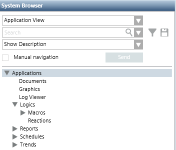

Application View
The Application View is predefined and includes all the objects pertaining to the system at the application-centric level, such as graphics, reports, and so on. Basically, it provides a depiction centered on special system components that authorized technicians typically use to configure specific items needed in the site project.
Application View | Levels |
|---|---|
 | The Applications root includes the following levels:
|
The Application View comes with installation and does not require any changes. If desired, you can customize it to a limited extent, by changing the Description of nodes in the System Browser tree. If desired, you can also associate a graphic with the root node of the view.